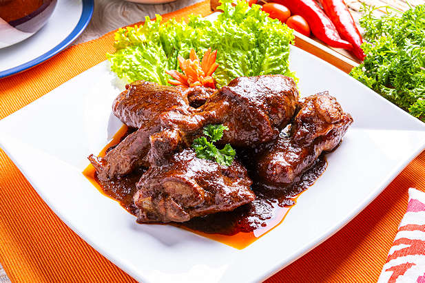
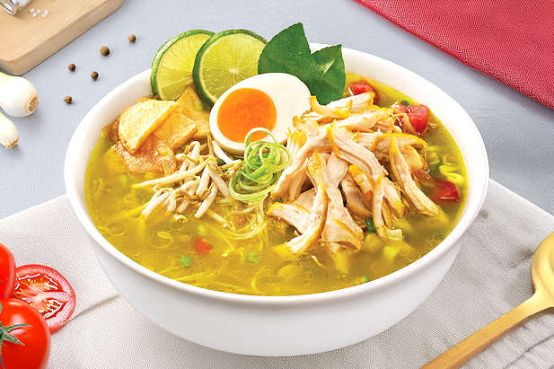
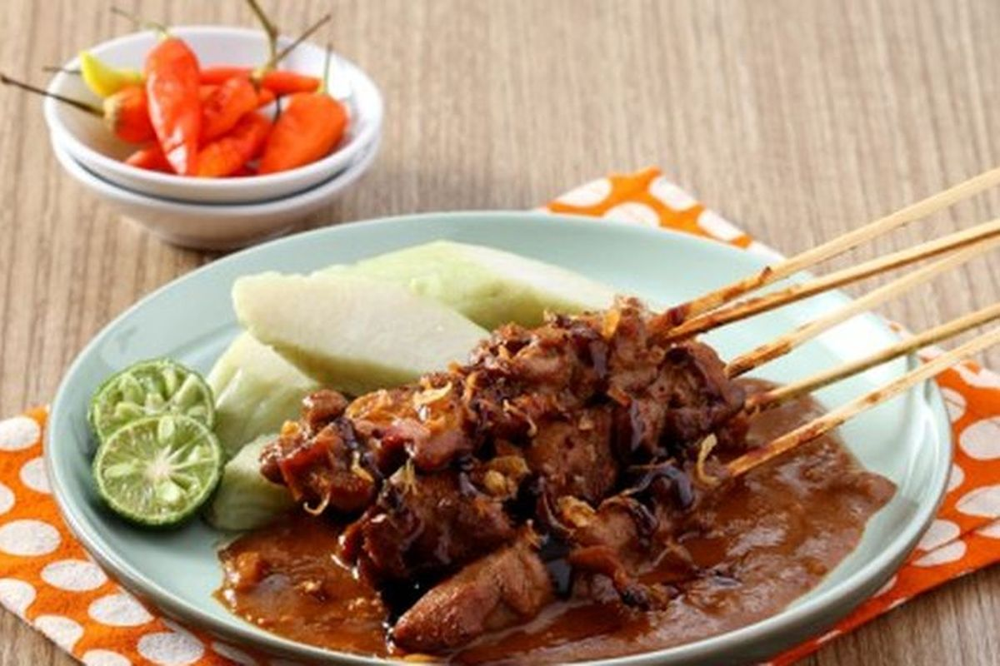
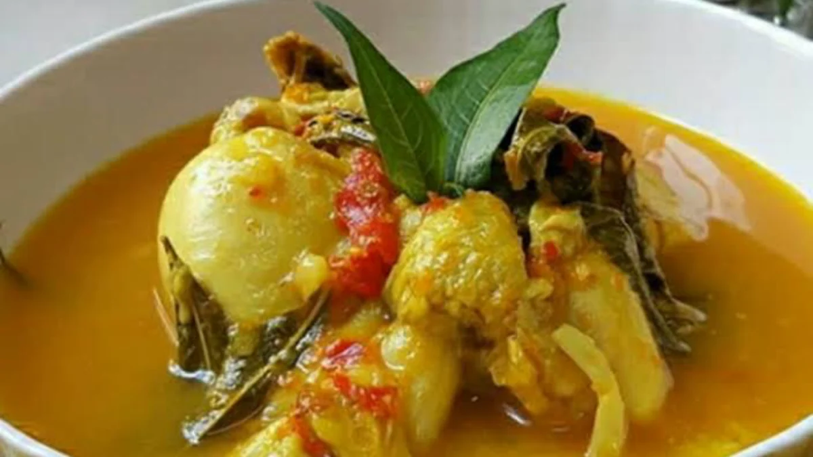

RENDANG

Daging sapi dimasak lama dengan santan dan rempah sampai kering dan hitam pekat. Khas Minangkabau, Sumatera Barat. Rasanya gurih, pedas, dan awet berhari-hari.

Daging sapi dimasak lama dengan santan dan rempah sampai kering dan hitam pekat. Khas Minangkabau, Sumatera Barat. Rasanya gurih, pedas, dan awet berhari-hari.

Sup berkuah kuning bening dengan kunyit, isinya ayam / daging, bihun, telur, dan taburan bawang goreng. Ada banyak versi daerah, dari Lamongan, Betawi, sampai Kudus.

Daging yang dipotong kecil, ditusuk, dibakar, lalu disiram bumbu kacang atau kecap. Paling terkenal Sate Madura dan Sate Ponorogo.

Durian yang difermentasi sampai asam. Biasanya dimasak jadi sambal atau kuah ikan. Khas Melayu Sumatera Selatan, Bengkulu, dan Jambi. Baunya kuat, tapi rasanya nagih.

Olahan ikan tenggiri + sagu yang direbus / digoreng, disajikan dengan kuah cuko yang asam manis pedas. Khas Palembang, Sumatera Selatan. Paling terkenal pempek kapal selam.